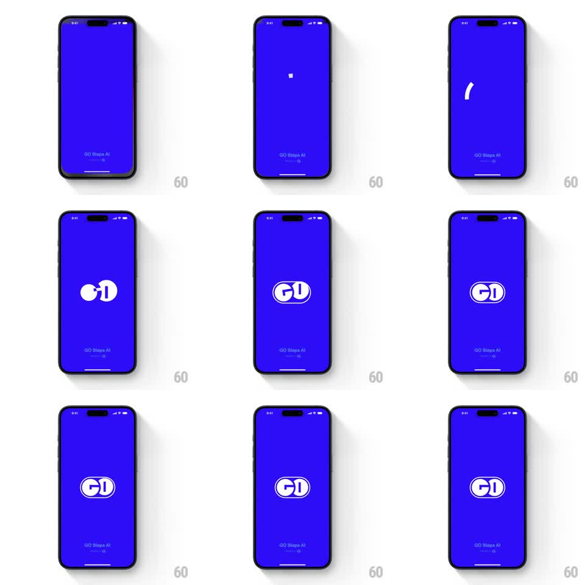

Media
Frame-by-frame

Rebuild this animation 1:1: GO Club's splash - on solid electric blue, a spinning loading arc winds up and morphs into the GO wordmark with a springy bounce, then holds.

Rebuild this animation 1:1: GO Club's splash - on solid electric blue, a spinning loading arc winds up and morphs into the GO wordmark with a springy bounce, then holds. ## Integration Integration: stack-agnostic spec - springs given as stiffness/damping, timed motions as duration + curve; map every value to your framework and animation library of choice. ## Scene Solid vivid blue screen. Center: the animation. Bottom center: small "GO Steps AI" caption. ## Motion spec Pattern: loader-to-logo morph, ~1.8s. - A tiny white square pops in center (100ms), then unfolds into a white arc that spins (0 -> 540deg, 700ms, ease-in-out) while growing. - The arc closes and its stroke reshapes into the letterforms: the loop becomes the "G" bowl, the tail becomes the "O" - a path morph, not a crossfade (400ms). - The assembled "GO" lands with a bounce (scale 1.08 -> 1, spring ~400/16, 250ms). - The wordmark holds; caption stays static. ## Calibration - Spin decelerates as the morph begins - stopping dead before morphing reads as two clips stitched. - The bounce is one damped oscillation; anything more reads as playful in the wrong register for a loading screen. ## Reduced motion Arc fades directly into the GO mark (300ms); no spin, no bounce. ## Don't miss - Background stays flat blue the whole time - no gradient sweep to "enrich" it. - The morph keeps stroke weight constant; thinning strokes mid-morph make the letters feel drawn by a different hand.